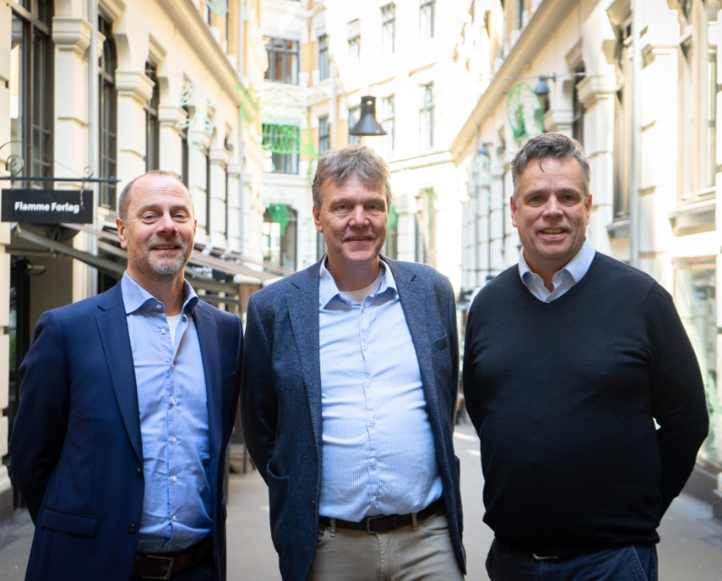
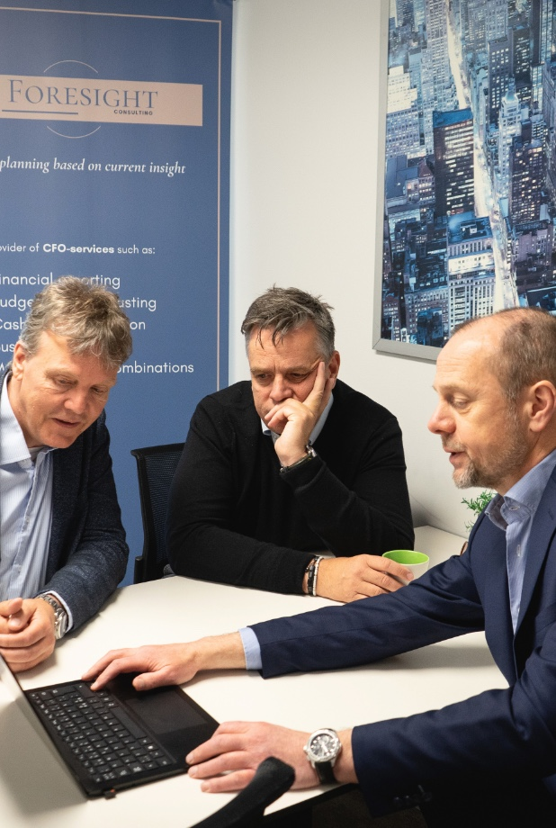
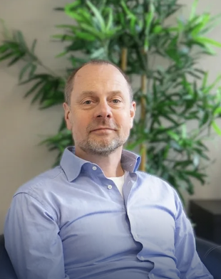

Prognose og rapportering
Vi bygger prognoser og rapporter som gjør strategi om til tydelige prioriteringer og god oppfølging.
Les mer→
Foresight hjelper ledere i SMB med å få bedre oversikt, tydeligere handlingsrom og et beslutningsgrunnlag som holder når situasjonen blir krevende.

Tjenestene er ulike i form og omfang, men fellesnevneren er alltid bedre styringsinformasjon, klarere konsekvensforståelse og tryggere beslutninger for ledelsen.
Vi bygger prognoser og rapporter som gjør strategi om til tydelige prioriteringer og god oppfølging.
Vi gir oversikt over kontantbildet, avdekker presspunkter og skaper et tydeligere handlingsrom.
Ved oppkjøp, salg eller eierskifte bidrar vi med struktur, analyser og finansiell trygghet.
Vi styrker styrets arbeid med relevant styringsinformasjon og tydelige analyser.
Foresight går inn når ledelsen trenger bedre oversikt, sterkere prioriteringer og finansielle vurderinger som er tett koblet til det som faktisk skjer i virksomheten.

Foresight ble etablert for å gi virksomheter bedre oversikt, tryggere prioriteringer og mer anvendelig finansiell innsikt i kritiske perioder. Vi er tydelige, jordnære og nyttige for ledelsen, og starter alltid med virksomhetens situasjon.
Les mer om Foresight→
30 års erfaring fra økonomi- og finansroller, de siste 20 årene på CFO-nivå.
Se profil →Autorisert regnskapsfører med 25 års erfaring fra regnskapsbyråer og fintech.
Se profil →30 års erfaring fra revisjon og regnskap, særlig innen skatt og M&A.
Se profil →25 års erfaring innen regnskap, controlling, CFO-arbeid og ledelse.
Se profil →Master i finans fra BI Oslo og flere års erfaring med regnskap for SMB.
Se profil →Hvordan virksomheter kan få bedre oversikt over handlingsrom, prioriteringer og tempo når likviditeten blir et reelt ledertema.
Styret trenger ikke flere tall for tallenes skyld. De trenger et bedre grunnlag for å vurdere retning, risiko og handlingsalternativer.
Mange virksomheter oppdager for sent at god rapportering ikke alene gir et godt grunnlag for ledelsesbeslutninger.
Ta kontakt for en uforpliktende og konfidensiell samtale om situasjonen deres.